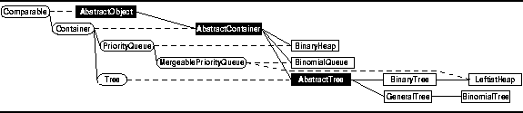
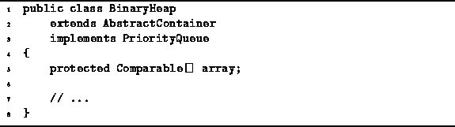

Data Structures and Algorithms
with Object-Oriented Design Patterns in Java
Data Structures and Algorithms
with Object-Oriented Design Patterns in JavaA binary heap is a heap-ordered complete binary tree which is implemented using an array. In a heap the smallest key is found at the root and since the root is always found in the first position of the array, finding the smallest key is a trivial operation in a binary heap.
In this section we describe the implementation
of a priority queue as a binary heap.
As shown in Figure  ,
we define a concrete class called BinaryHeap
for this purpose.
,
we define a concrete class called BinaryHeap
for this purpose.

Figure: Object class hierarchy
Program introduces the BinaryHeap class.
The BinaryHeap class extends the AbstractContainer class
introduced in Program
and it implements the PriorityQueue interface
defined in Program .

Program: BinaryHeap fields.
 Copyright © 1998 by Bruno R. Preiss, P.Eng. All rights reserved.
Copyright © 1998 by Bruno R. Preiss, P.Eng. All rights reserved.